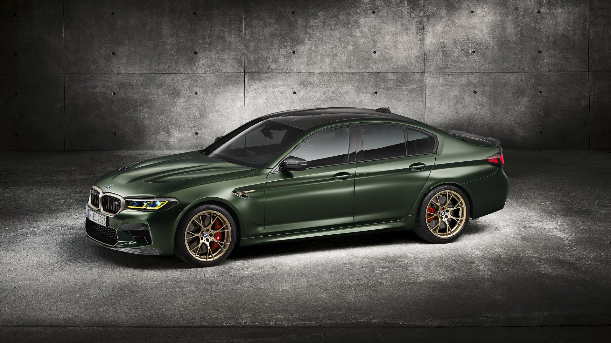
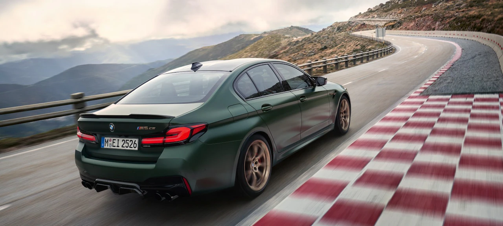

Der BMW M5 CS
Noch sportlicher, noch luxuriöser, noch exklusiver: Der BMW M5 CS ist die neue Speerspitze im Modellprogramm von BMW M.

Ring frei für das leistungsstärkste BMW M Serienmodell, das es je gab: Mit dem BMW M5 CS erweitert BMW M das Modellprogramm der BMW M5 Limousine zum ersten Mal in der Geschichte um ein exklusives CS Modell. CS – das bedeutet Competition Sport: Der BMW M5 CS liefert bahnbrechende Performancewerte und bietet Motorsportgenetik bis ins kleinste Detail. Exklusive Fahrwerks-, Leichtbau- und Designkomponenten machen ihn einzigartig in Performance und Premiumanspruch.

5 Starke Fakten
- Der bislang leistungsstärkste BMW M5
- Leistung: 467 kW (635 PS)
- Von 0 auf 100 km/h in 3,0 Sekunden
- Carbon-Komponenten im Exterieur und Interieur
- Gewichtsreduktion von insgesamt 70 kg durch Leichtbau